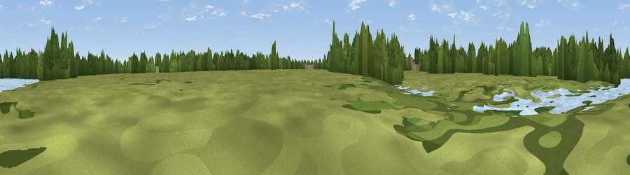

Viewpoint near Norwood Green
#45345 in England · top 73% of its area beats it · near Norwood GreenWhere it is
The exact computed spot (TQ 14909 78276). Click the marker for map links.
The view, rendered

A 360° render of this exact spot computed from the terrain model, tree cover and land cover — summer colours, afternoon light, calibrated against photographs of famous viewpoints. Real trees, hedges and buildings will differ in detail.
The panorama
Grey silhouette: terrain skyline in each direction (720 bearings, Earth curvature and refraction included). Dashed green: skyline with trees (+15 m) and buildings (+8 m) as obstacles. Blue strip: how far the ground is visible on each bearing.
Where the view opens
Wedge length = distance to the farthest visible ground on that bearing (vegetation-aware). Rings at 10, 25 and 50 km.
What fills the view
49% grassland · 34% woodland · 7% built-up · 7% water · 2% cropland
Angular shares of the visible panorama (visual magnitude), not map area. Landscape diversity 0.51 (0–1 Shannon).
Key numbers
More beautiful places nearby
The staircase of upgrades: each row has a higher view potential than everything closer. Driving times are estimates from straight-line distance, calibrated against real road routing — check an actual route before setting out.
| Place | Direction | Drive | Score |
|---|---|---|---|
| Viewpoint near Richmond | SE · 5 km | ~12 min | 42.3 |
| Viewpoint near Northolt | NNW · 6 km | ~12 min | 47.3 |
| Viewpoint near Hayes End | NW · 7 km | ~14 min | 48.1 |
| Harrow on the Hill | N · 9 km | ~18 min | 60.7 |
| Box Hill | S · 27 km | ~43 min | 70.4 |
| Viewpoint near Box Hill Village | S · 27 km | ~44 min | 71.0 |
| Viewpoint near Coldharbour | S · 35 km | ~53 min | 71.3 |
| Viewpoint near Halton | NW · 41 km | ~61 min | 74.3 |
51.49176, -0.34624 · source: osm viewpoint · position refined by local search. Computed location — check access rights before visiting.